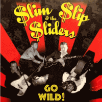

$lim $lip and the $liders - Go Wild! (Album, 2009)
01 - Go Wild (2:44)
02 - I Don't Need You No More (2:25)
03 - Raging Sea (2:02)
04 - Cryin' Over You (2:20)
05 - Bad Bad Boy (2:41)
06 - Something Baby (2:50)
07 - Slipstream (2:17)
08 - Good Show, No Go (1:54)
09 - I Told You Baby (2:44)
10 - Feelin' So Blue (That I Could Die) (3:41)
11 - Watch Your Mouth (2:06)
12 - Bird Doggin' (3:09)
13 - My Baby Don't Want Me No More (2:42)
14 - Love Me (2:19)
15 - Blind John Thomas Blues (4:49)
© Slip Disc Records :: [SDR-069]
Notes
Review
317/366 (Project 366)
Wild Garage Rock'n'Roll with a Rockabilly twist. Screamings, furious mood, raw power, guitar mighty craze, some surfin' chic tones, rockin' and rollin' drive, saucy tunes. This is most of the album. But also some country melodious and smooth rockabilly numbers like "Cryin' Over You" or "Feelin' So Blue (That I Could Die)". In overall, great turbulent fun. And the fun goes really wild.